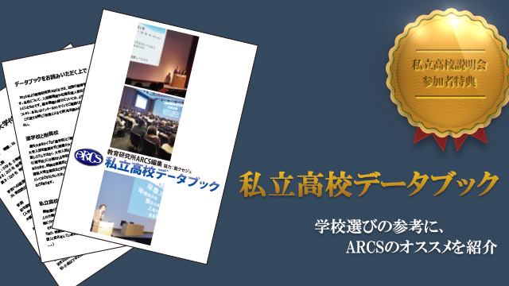

教育研究所ARCS主催の私立高校説明会がいよいよ迫ってきました。たくさんの高校の最新情報を一気にお伝えする会ですので、受験生のお子さんをお持ちの保護者の方や、受験を来年に控えた中2生の保護者の方は必見です！ 参加無料ですので、ぜひぜひふるってご参加ください！
と、ちゃっかり宣伝しましたが、会を運営する側も本当に大変なんです。総合プロデュースの重責を担う池村先生などは、本当に毎日が決戦の様相を呈しています。私はといえば、今年はアシスタント。主に参加校への取材を担当していますが、実はそれ以外にとても重要な役割を任されていたのです。
それは、「私立高校データブック」の作成。
私立高校説明会は、朝から夕方まで長時間にわたって開催します。長時間楽しんでお話をお聞きいただけるよう、我々もいろいろと仕掛けを用意しているのですが、そこにだめ押しで、近隣の高校についての情報を一校ごとにまとめた冊子、その名も「私立高校データブック」をお土産としてご用意しました。
入試難易度や学校へのアクセス、年間の学費、在籍生徒数などの数値データと並んで、ちょっと注目してほしいのはARCS所員による寸評です。
教育研究所ARCSと共催の学習塾クセジュは30年にわたり東葛地域で高校入試指導を行ってきました。実は、これだけ長く一地域で塾をやっていると、意図しなくても様々な情報が集まってきます。卒業した生徒たちからの情報、業界の噂話、高校の先生との何気ない会話。集めてみるとまぁたくさんあるのです。これらの情報を元に、”ちょっと辛口”のコメントを高校ごとに寸評としてまとめたのですが、これがまた難しい。文体一つとっても結構気を遣う一方で、当たり障りのないことを書いても意味がない。学校選びの参考になるよう、ある程度はっきりと「ARCSのオススメ」を書かなければなりません。
正直なところ、今回の私立高校説明会に参加していただく高校は、どちらも地域では有名な「よい学校」ですから、どこがオススメかと言われればすべてオススメなのですが、それでもあえて、悩みに悩んでオススメを書いています。一部微妙にあいまいな言い回しのところもありますが、そこは行間を読んでください（笑）。
このデータブック、私立高校説明会にいらした方のみの限定配布ですので、お読みになりたい方は是非ふるって会の方にご参加ください！
データは今後もどんどんバージョンアップさせていきますのでお楽しみに！